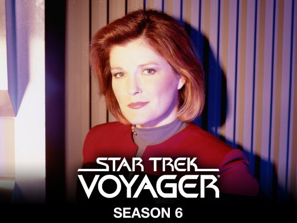

")
Alternativ: Star Trek: Voyager
 
 IMDB-Wertung: 7.7 / 10
IMDB-Wertung: 7.7 / 10  Metascore:
Metascore: 
Mit Star Trek: Voyager machte Paramount einen ganz neuen Ansatz als bei den bisherigen Star Trek-Serien: Die USS Voyager verschwindet durch den Fürsorger im Delta-Quadranten, fernab von der Föderation. Die Heimreise würde selbst bei maximaler Warpgeschwindigkeit 75 Jahre dauern und so macht sich Captain Kathryn Janeway auf, um einen Weg zurück in den Alpha-Quadranten zu finden… Erst bei Voyager, mit Kate Mulgrew als Captain Kathryn Janeway, spielt eine Frau die leitende Rolle einer Star-Trek-Serie.
Jahr: 1995
Dauer: 88 Minuten
FSK:
Land: USA Studio: CBS Paramount Domestic TelevisionTonspuren: DTS - ,
Untertitel: Deutsch, Englisch,
Auflösung: SD (700x480) Größe: 2078 MB
Genre: Action, Sci-Fi, Abenteuer, TV-Serie
Regisseur: David Livingston, Winrich Kolbe, Allan Kroeker, Michael Vejar, Cliff Bole, Alexander Singer, Terry Windell, Les Landau, LeVar Burton, Jesús Salvador Treviño, James L. Conway, Kim Friedman,  Robert Duncan McNeill, Anson Williams,
Robert Duncan McNeill, Anson Williams,  Jonathan Frakes, Robert Scheerer, Marvin V. Rush, Robert Picardo, Kenneth Biller, Nancy Malone, Andrew Robinson, Allan Eastman, John T. Kretchmer, Victor Lobl,
Jonathan Frakes, Robert Scheerer, Marvin V. Rush, Robert Picardo, Kenneth Biller, Nancy Malone, Andrew Robinson, Allan Eastman, John T. Kretchmer, Victor Lobl,  Roxann Dawson, John Bruno, Tim Russ, Terrence O'Hara, Gabrielle Beaumont, Allison Liddi-Brown, Peter Lauritson
Roxann Dawson, John Bruno, Tim Russ, Terrence O'Hara, Gabrielle Beaumont, Allison Liddi-Brown, Peter Lauritson
Drehbuch: Richard Ayoade
Soundtrack:
Darsteller:
 Kate Mulgrew als Captain Kathryn Janeway
Kate Mulgrew als Captain Kathryn Janeway Robert Beltran als Chakotay
Robert Beltran als Chakotay Ethan Phillips als Neelix
Ethan Phillips als Neelix Robert Picardo als The Doctor
Robert Picardo als The Doctor Tim Russ als Tuvok
Tim Russ als Tuvok Majel Barrett als Voyager Computer
Majel Barrett als Voyager Computer Manu Intiraymi als Icheb
Manu Intiraymi als Icheb Josh Clark als Lieutenant Joe Carey
Josh Clark als Lieutenant Joe Carey Dwight Schultz als Barclay
Dwight Schultz als Barclay Raphael Sbarge als Michael Jonas
Raphael Sbarge als Michael Jonas Anthony De Longis als First Maje Culluh
Anthony De Longis als First Maje Culluh Tom Virtue als Lieutenant Walter Baxter
Tom Virtue als Lieutenant Walter Baxter Richard Herd als Admiral Owen Paris
Richard Herd als Admiral Owen Paris Brad Dourif als Crewman Lon Suder
Brad Dourif als Crewman Lon Suder Rob LaBelle als Kafar
Rob LaBelle als Kafar Larry Hankin als Gaunt Gary
Larry Hankin als Gaunt Gary Rick Worthy als Crewman Noah Lessing
Rick Worthy als Crewman Noah Lessing Marina Sirtis als Counselor Deanna Troi
Marina Sirtis als Counselor Deanna Troi Jack Shearer als Admiral Hayes
Jack Shearer als Admiral Hayes John de Lancie als Q
John de Lancie als Q Kirk Baily als Magnus Hansen
Kirk Baily als Magnus Hansen Brian Markinson als Lieutenant Peter Durst
Brian Markinson als Lieutenant Peter Durst Sarah Silverman als Rain Robinson
Sarah Silverman als Rain Robinson John Savage als Captain Rudy Ransom
John Savage als Captain Rudy RansomDatei: X:\HD-Serien\Star Trek - Raumschiff Voyager\S01\Star Trek - Voyager - 1x01 - 1x02 - Der Fuersorger - 480p.mkv seit 27.06.2016
Festplatte: HD Serien(I-ST)
 Es gibt insgesamt 182 Filme in der Gruppe 'HD-Serien'
Es gibt insgesamt 182 Filme in der Gruppe 'HD-Serien'